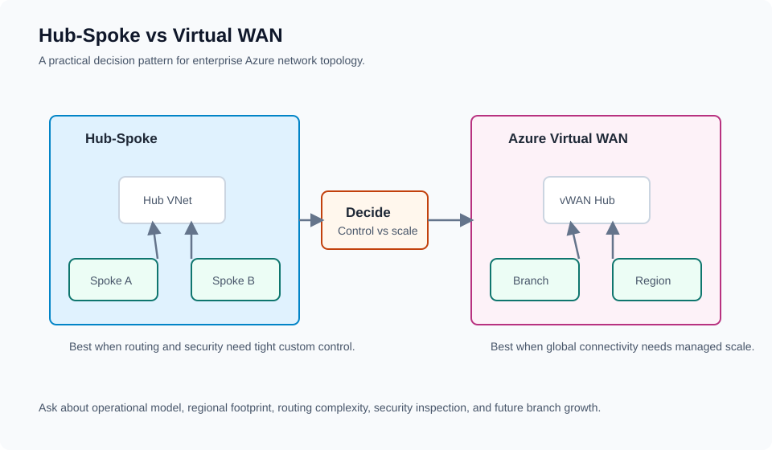
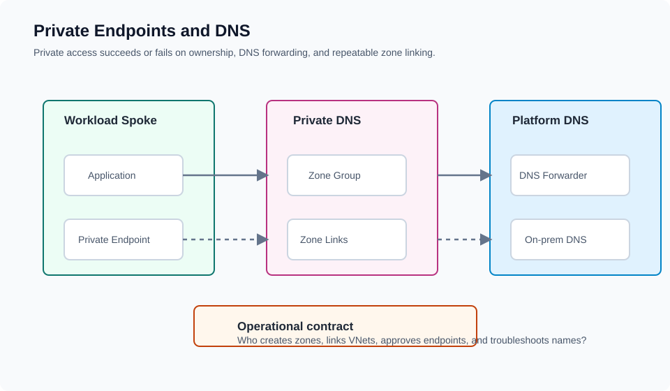
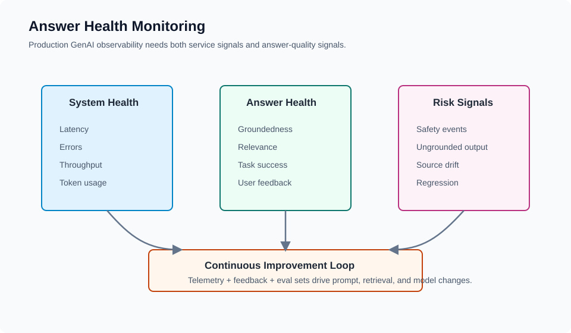
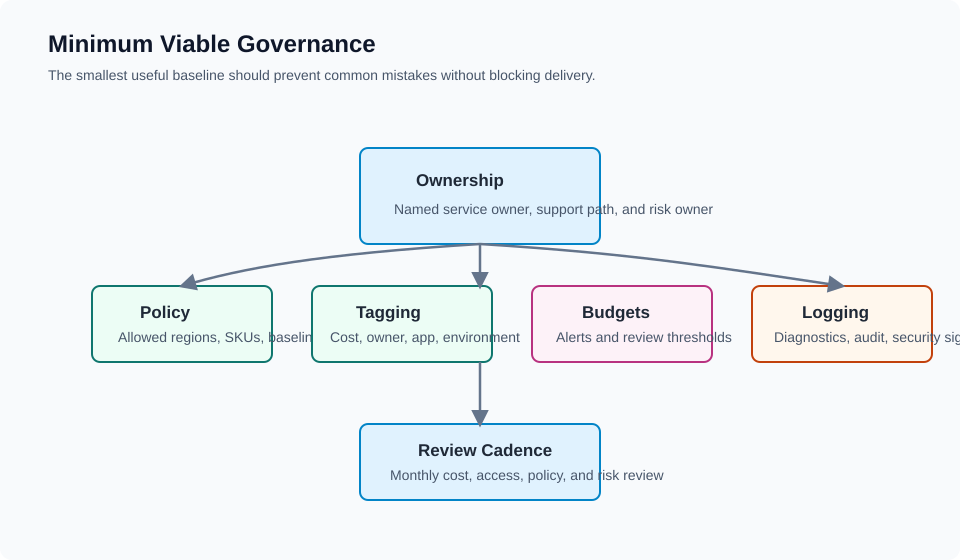

Enterprise Landing Zone
Governed foundation with subscription structure, identity, network, policy, and monitoring boundaries.
Read articleArchitecture pattern library
Use these pattern cards as starting points for blog posts, community sessions, design reviews, and customer-safe architecture discussions.

Core patterns
These are intentionally high-level. The goal is to make tradeoffs visible before deep implementation work begins.
Governed foundation with subscription structure, identity, network, policy, and monitoring boundaries.
Read article
Trusted retrieval, source grounding, safety controls, telemetry, and feedback loops.
Read article
Centralized authentication, policy, quotas, routing, logging, resilience, and usage visibility.
Read article
Decision pattern for custom network control versus managed global connectivity scale.
Read article
Operational model for private access, zone ownership, forwarding, and troubleshooting.
Read article
Observe system health, answer quality, risk signals, feedback, and evaluation regressions.
Read article
The smallest useful baseline for ownership, policy, tagging, budgets, logging, and review.
Read articleDownloadable assets
Use these as lightweight review prompts before design workshops, pilot reviews, or community sessions.